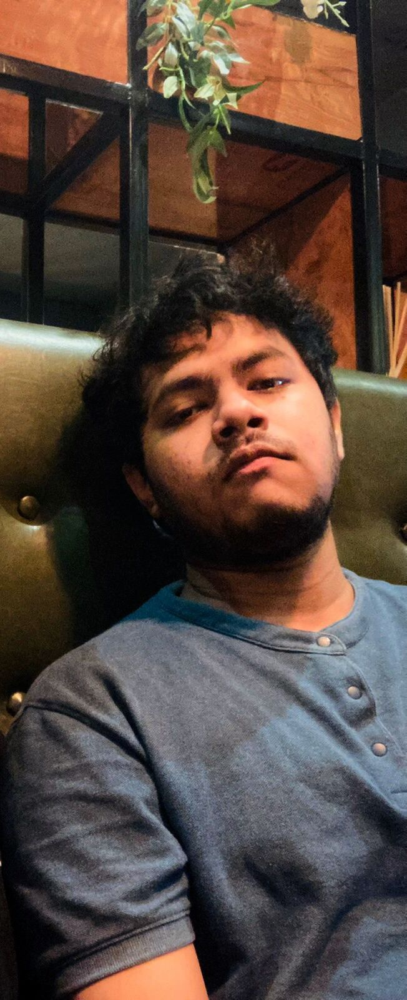

Retention of Haptic Memory
Masters Thesis
Supervisors: Eyal Ofek, Massimiliano Di Luca, Diar Abdlkarim

Research Associate (VR Lab) | University of Birmingham
Specialising in human-computer interaction, immersive VR/XR systems, visuo-haptic perception, and interactive experimental design
My research focuses on visuo-haptic perception, immersive VR/XR systems, and interactive experimental design.
Masters Thesis
Supervisors: Eyal Ofek, Massimiliano Di Luca, Diar Abdlkarim
Yilong Lin, Eyal Ofek, Massimiliano Di Luca, Arindam Dutta
Working Paper - Initial version intended for submission to HCI conferences (e.g., CHI/UIST)
Collaborated and developed an adaptive metronome algorithm for the ARME (Augmented Reality Music Ensemble) project to dynamically synchronise with real-world tempo variations
Dec 2024 - Present • University of BirminghamDeveloped native iOS and macOS applications in Swift, managing cross-platform deployment, build pipelines, and performance optimisation across Apple platforms.
Dec 2024 - Present • University of BirminghamEngineered automated video segmentation pipelines using Python (SAM2) to process media assets for integration into VR environments, applying software best practices for maintainability and reproducibility.
Dec 2024 - Present • University of BirminghamMaintained and updated the VR Lab web platform (HTML/CSS/JavaScript), managing version control and ensuring cross-browser compatibility.
Dec 2024 - Present • University of BirminghamCoordinating interdisciplinary research conferences and seminars, collaborating with researchers across the UK.
Mar 2025 - Present • University of BirminghamA track record across VR/XR engineering, software development, and research.
Languages, platforms, and tools developed across research and industry projects.
University of Birmingham, UK
2023 – 2024
Key Modules: HCI Theory and Practice, Machine Learning, Intelligent Interactive Systems, Research Topics in HCI, Experimental Design & Evaluation Methods, Mobile & Ubiquitous Computing
Cotton University, Assam, India
2017 – 2020
Key Modules: Quantum Mechanics, Classical Mechanics, Electromagnetism, Waves & Optics, Thermodynamics & Statistical Physics
A collection of VR/XR, interactive, and software development projects.

Collaborated and designed a Virtual Reality chemistry lab as a Unity Developer Intern at the CTL (Collaborative Teaching Laboratory) at the University of Birmingham. Built immersive lab simulations enabling students to conduct chemistry experiments in a virtual environment.

Developed an interactive Unity environment featuring 100 metronomes where users tap in real time to control one metronome, and all 100 metronomes gradually synchronise with the user's rhythm. A real-time demonstration of coupled oscillator synchronisation.

Developed a database application for Vuzix M400 smart glasses that scans QR codes on objects to access stored information, and allows users to borrow and return items directly through the AR interface.

Recorded and prepared videos of people and environments re-enacting scenes from the 1500s at Kenilworth Castle. Processed the footage for a virtual augmented environment, placing lifelike avatars into an immersive historical reconstruction.
Thoughts, tutorials, and insights on VR/XR development and HCI research.
Blog posts will be added here soon. Stay tuned for articles on VR development, HCI research, and more.